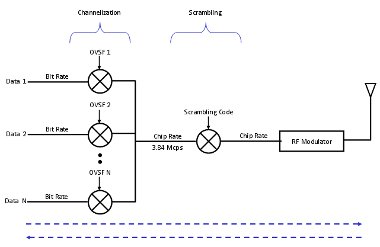
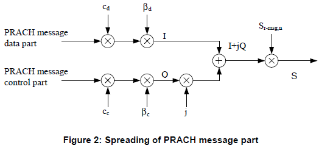
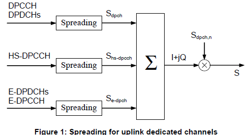
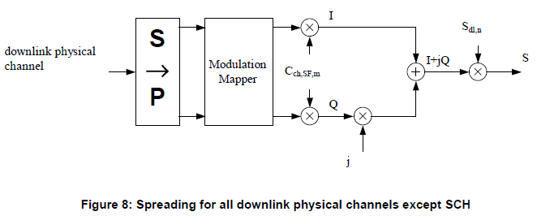

|
UMTS Quick Reference Go Back To Index Home : www.sharetechnote.com |
|
|
Scrambling Code
Let's suppose you are a NodeB. You will getting various signals from many different users (UEs) all at the same time. Then how would you differentiate the incoming signals into separate users at the very low level of your hardware ?. Of course you can figure out exactly which user you are dealing with at higher layer with various type of user ID (UE ID), but my question is how to figure out each user at PHY layer ?
Now let's assume that you are a UE. You may be hearing many signals from multiple NodeBs simultaneously. Then how would you differentiate the incoming signals into separate NodeB at the very low level of your hardware ?
The answer to both of the question is same. It is "Scrambling Code". By using the scrambling code, NodeB can separate signals coming simultaneously from many different UEs and UE can separate signals coming simultaneously from many different NodeB.
Now let's look into how/where the scrambling code works. Following illustration shows the procedure about the data processing in physical layer. As you see in the following diagram, "Scrambling" happens at the chip rate of the signal processing. Since the chip rate of the scrambling code is the same as the chip rate of the chanelization code scrambling does not change the signal data rate.

A specific bit sequence which is used for scrambling is called 'Scrambling code'.
There are two types of scrambling codes : long scrambling code and short scrambling code. Long scrambling code(38400 chips) derived from Gold codes and short codes (256 chips) derived from S(2) codes. Then which type of scrambling code we use ?. In downlink, only long codes are used. In uplink direction long codes are used for node B using Rake reciever and short codes are used for NodeB using multiuser detection or interference cancellation recievers. With short codes the implementation of cyclic processing structure is simpler.
Even though main role of the scrambling code is to separate multiple signals into the one from each transmitter, it has several additional side effect (I mean 'good side effect').
It can improve Synchronization. The scrambling code is designed to have relatively high auto-correlation property and you can use the result of high-auto correlation to tune the synchronization timing.
It enables you to reuse the spreading code. Spreading code is used to match the bit rate data into chip rate (3.84 Mcps) signal and also for separating one specific channel from another. For this separation, it uses a special set of spreading code which has the orthogonal to each member of the set. This set of spreading code being used in WCDMA is called VLSF (Variable Length Spreading Factor). But the number of VLSF is not infinite. We only have a finite number of VLSF codes which may put us in short of those codes. If two different data stream uses the same VLSF codes, the receive cannot differentiate these two. But if the two channels are using different scrambling codes even though they are using the same spreading code, the two data can be separated. The two data stream will go to different reciever path by scrambling process (unscrambling process more accurately speaking).
Now let's look into the further details of how the scrambling process is really implemented. Here, I will just give you the diagram for each case and the 3GPP specification where you can have further details.
First, let's look into PRACH scrambling part. The overall flow is as follows.

For the details of PRACH Preamble part of scrambling code, refer to 25.213, section 4.3.3.2 Preamble scrambling code. For the details of PRACH message part of scrambling code, refer to 25.213, section , 4.3.2.5 PRACH message part scrambling code
How UE would know which scrambling code it has to use for PRACH ? That information is carried by SIB5 as follows (see the IE marked in red)
SysInfoType5 ::= SEQUENCE [000] +-sib6indicator ::= BOOLEAN [FALSE] +-pich-PowerOffset ::= INTEGER (-10..5) [-5] +-modeSpecificInfo ::= CHOICE [fdd] | +-fdd ::= SEQUENCE | +-aich-PowerOffset ::= INTEGER (-22..5) [5] +-primaryCCPCH-Info ::= CHOICE OPTIONAL:Omit +-prach-SystemInformationList ::= SEQUENCE OF SIZE(1..maxPRACH[16]) [1] | +-PRACH-SystemInformation ::= SEQUENCE [11101] | +-prach-RACH-Info ::= SEQUENCE | | +-modeSpecificInfo ::= CHOICE [fdd] | | +-fdd ::= SEQUENCE | | +-availableSignatures ::= BIT STRING [1111111111111111] | | +-availableSF ::= ENUMERATED [sfpr64] | | +-preambleScramblingCodeWordNumber ::= INTEGER (0..15) [0] | | +-puncturingLimit ::= ENUMERATED [pl1] | | +-availableSubChannelNumbers ::= BIT STRING [111111111111]
First, let's look into scrambling process of all other UL channels except PRACH. The overall flow is as follows.

For the details of UL DPCH part of scrambling code, refer to 25.213, section 4.3.2.4 Dedicated physical channels scrambling code.
How UE would know which scrambling code it has to use for PRACH ? This code is determined by the network and informed to UE by rrc Connection Setup and Radio Bearer Setup message as follows.
DL-CCCH-Message ::= SEQUENCE [0] +-integrityCheckInfo ::= SEQUENCE OPTIONAL:Omit +-message ::= CHOICE [rrcConnectionSetup] +-rrcConnectionSetup ::= CHOICE [r3] +-r3 ::= SEQUENCE [0] +-rrcConnectionSetup-r3 ::= SEQUENCE [0011100111] | | +-ul-ChannelRequirement ::= CHOICE [ul-DPCH-Info] OPTIONAL:Exist | | +-ul-DPCH-Info ::= SEQUENCE [1] | | +-ul-DPCH-PowerControlInfo ::= CHOICE [fdd] OPTIONAL:Exist | | | +-fdd ::= SEQUENCE | | | +-dpcch-PowerOffset ::= INTEGER (-82..-3) [-30] | | | +-pc-Preamble ::= INTEGER (0..7) [0] | | | +-sRB-delay ::= INTEGER (0..7) [7] | | | +-powerControlAlgorithm ::= CHOICE [algorithm1] | | | +-algorithm1 ::= INTEGER (0..1) [0] | | +-modeSpecificInfo ::= CHOICE [fdd] | | +-fdd ::= SEQUENCE [00] | | +-scramblingCodeType ::= ENUMERATED [longSC] | | +-scramblingCode ::= INTEGER (0..16777215) [0] | | +-numberOfDPDCH ::= INTEGER OPTIONAL:Omit | | +-spreadingFactor ::= ENUMERATED [sf64] | | +-tfci-Existence ::= BOOLEAN [TRUE] | | +-numberOfFBI-Bits ::= INTEGER OPTIONAL:Omit | | +-puncturingLimit ::= ENUMERATED [pl1]
RRC:DL-DCCH-Message DL-DCCH-Message ::= SEQUENCE [0] +-integrityCheckInfo ::= SEQUENCE OPTIONAL:Omit +-message ::= CHOICE [radioBearerSetup] +-radioBearerSetup ::= CHOICE [r3] +-r3 ::= SEQUENCE [0] +-radioBearerSetup-r3 ::= SEQUENCE [001001000100101010100111] | | +-ul-ChannelRequirement ::= CHOICE [ul-DPCH-Info] OPTIONAL:Exist | | +-ul-DPCH-Info ::= SEQUENCE [1] | | +-ul-DPCH-PowerControlInfo ::= CHOICE [fdd] OPTIONAL:Exist | | | +-fdd ::= SEQUENCE | | | +-dpcch-PowerOffset ::= INTEGER (-82..-3) [-30] | | | +-pc-Preamble ::= INTEGER (0..7) [0] | | | +-sRB-delay ::= INTEGER (0..7) [7] | | | +-powerControlAlgorithm ::= CHOICE [algorithm1] | | | +-algorithm1 ::= INTEGER (0..1) [0] | | +-modeSpecificInfo ::= CHOICE [fdd] | | +-fdd ::= SEQUENCE [10] | | +-scramblingCodeType ::= ENUMERATED [longSC] | | +-scramblingCode ::= INTEGER (0..16777215) [0] | | +-numberOfDPDCH ::= INTEGER (1..maxDPDCH-UL[6]) [1] OPTIONAL:Exist | | +-spreadingFactor ::= ENUMERATED [sf64] | | +-tfci-Existence ::= BOOLEAN [TRUE] | | +-numberOfFBI-Bits ::= INTEGER OPTIONAL:Omit | | +-puncturingLimit ::= ENUMERATED [pl0-84]
First, let's look into scrambling process of all DL channels. The overall flow is as follows.

For the details of DL channels of scrambling code, refer to 25.213, section 5.1.4 Scrambling
DL-CCCH-Message ::= SEQUENCE [0] +-integrityCheckInfo ::= SEQUENCE OPTIONAL:Omit +-message ::= CHOICE [rrcConnectionSetup] +-rrcConnectionSetup ::= CHOICE [r3] +-r3 ::= SEQUENCE [0] +-rrcConnectionSetup-r3 ::= SEQUENCE [0011100111] | | +-dl-InformationPerRL-List ::= SEQUENCE OF SIZE(1..maxRL[8]) [1] OPTIONAL:Exist | +-DL-InformationPerRL ::= SEQUENCE [10] | +-modeSpecificInfo ::= CHOICE [fdd] | | +-fdd ::= SEQUENCE [00] | | +-primaryCPICH-Info ::= SEQUENCE | | | +-primaryScramblingCode ::= INTEGER (0..511) [9] | | +-dummy1 ::= SEQUENCE OPTIONAL:Omit | | +-dummy2 ::= SEQUENCE OPTIONAL:Omit | +-dl-DPCH-InfoPerRL ::= CHOICE [fdd] OPTIONAL:Exist | | +-fdd ::= SEQUENCE [000] | | +-pCPICH-UsageForChannelEst ::= ENUMERATED [mayBeUsed] | | +-dpch-FrameOffset ::= INTEGER (0..149) [0] | | +-secondaryCPICH-Info ::= SEQUENCE OPTIONAL:Omit | | +-dl-ChannelisationCodeList ::= SEQUENCE OF SIZE(1..maxDPCH-DLchan[8]) [1] | | | +-DL-ChannelisationCode ::= SEQUENCE [00] | | | +-secondaryScramblingCode ::= INTEGER OPTIONAL:Omit | | | +-sf-AndCodeNumber ::= CHOICE [sf128] | | | | +-sf128 ::= INTEGER (0..127) [30] | | | +-scramblingCodeChange ::= ENUMERATED OPTIONAL:Omit | | +-tpc-CombinationIndex ::= INTEGER (0..5) [0] | | +-dummy ::= ENUMERATED OPTIONAL:Omit | | +-closedLoopTimingAdjMode ::= ENUMERATED OPTIONAL:Omit | +-dummy ::= SEQUENCE OPTIONAL:Omit +-laterNonCriticalExtensions ::= SEQUENCE OPTIONAL:Omit
RRC:DL-DCCH-Message DL-DCCH-Message ::= SEQUENCE [0] +-integrityCheckInfo ::= SEQUENCE OPTIONAL:Omit +-message ::= CHOICE [radioBearerSetup] +-radioBearerSetup ::= CHOICE [r3] +-r3 ::= SEQUENCE [0] +-radioBearerSetup-r3 ::= SEQUENCE [001001000100101010100111] | | +-dl-InformationPerRL-List ::= SEQUENCE OF SIZE(1..maxRL[8]) [1] OPTIONAL:Exist | +-DL-InformationPerRL ::= SEQUENCE [10] | +-modeSpecificInfo ::= CHOICE [fdd] | | +-fdd ::= SEQUENCE [00] | | +-primaryCPICH-Info ::= SEQUENCE | | | +-primaryScramblingCode ::= INTEGER (0..511) [9] | | +-dummy1 ::= SEQUENCE OPTIONAL:Omit | | +-dummy2 ::= SEQUENCE OPTIONAL:Omit | +-dl-DPCH-InfoPerRL ::= CHOICE [fdd] OPTIONAL:Exist | | +-fdd ::= SEQUENCE [000] | | +-pCPICH-UsageForChannelEst ::= ENUMERATED [mayBeUsed] | | +-dpch-FrameOffset ::= INTEGER (0..149) [0] | | +-secondaryCPICH-Info ::= SEQUENCE OPTIONAL:Omit | | +-dl-ChannelisationCodeList ::= SEQUENCE OF SIZE(1..maxDPCH-DLchan[8]) [1] | | | +-DL-ChannelisationCode ::= SEQUENCE [00] | | | +-secondaryScramblingCode ::= INTEGER OPTIONAL:Omit | | | +-sf-AndCodeNumber ::= CHOICE [sf128] | | | | +-sf128 ::= INTEGER (0..127) [5] | | | +-scramblingCodeChange ::= ENUMERATED OPTIONAL:Omit | | +-tpc-CombinationIndex ::= INTEGER (0..5) [0] | | +-dummy ::= ENUMERATED OPTIONAL:Omit | | +-closedLoopTimingAdjMode ::= ENUMERATED OPTIONAL:Omit | +-dummy ::= SEQUENCE OPTIONAL:Omit
|